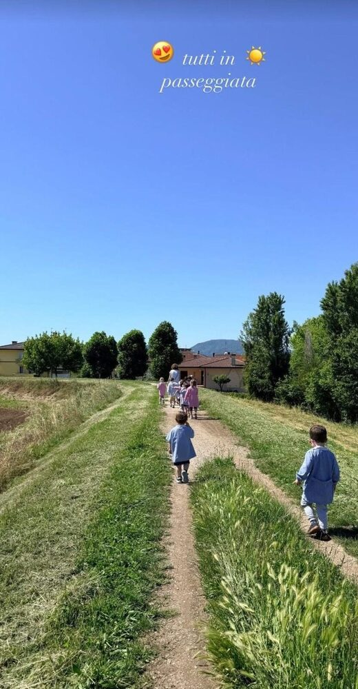
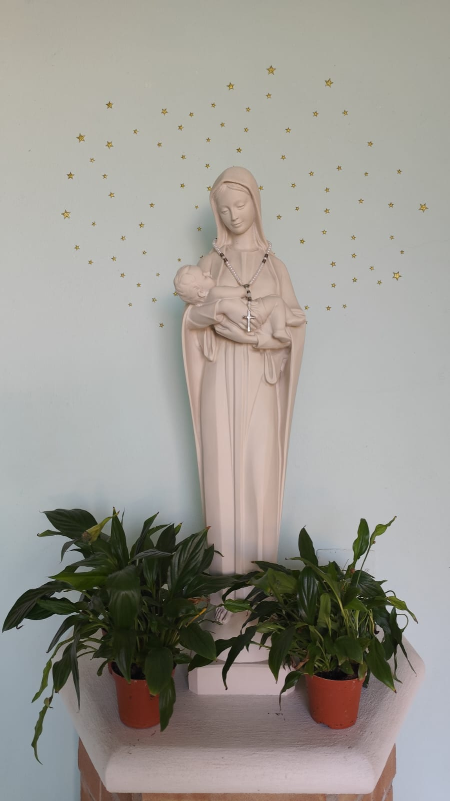

Il sé e l'altro
Per imparare a costruire la propria identità personale nelle sue molteplici dimensioni e a riconoscere l'altro nelle sue differenze, che lo rendono unico.
Il nostro progetto pedagogico per accompagnare ogni bambino e ogni bambina nella scoperta di sé, degli altri e del mondo
Educare significa tirare fuori il talento di ognuno, il suo grado di libertà, la strada per apprendere davvero
La nostra scuola dell'infanzia è un luogo piccolo e accogliente, dove ogni bambino e ogni famiglia trovano uno spazio pensato su misura. Qui l'ambiente è gioioso, sicuro e stimolante, capace di accompagnare i più piccoli nella loro crescita quotidiana.
Le giornate si arricchiscono non solo di momenti di routine rassicuranti, ma anche di progetti e laboratori creativi, di uscite didattiche, di momenti di preghiera e di collaborazioni con il Comune e le associazioni del territorio, che rendono la scuola parte attiva e viva della comunità.
La scuola segue le Linee Pedagogiche per il Sistema Integrato "Zerosei", nel rispetto delle Indicazioni Nazionali per il curricolo della scuola dell'infanzia, offrendo ai bambini esperienze educative pensate per sostenere uno sviluppo armonico e globale.
Attualmente la scuola accoglie una sezione di bambini dai 2 ai 5 anni.
Gli ambienti del fare e dell'agire del bambino previsti dalle Indicazioni Nazionali
Così come sottolineato dalle Indicazioni Nazionali, crediamo che la scuola dell'infanzia sia una scuola del fare, del sentire, del pensare, dell'agire relazionale, dell'esprimere, del comunicare, del gustare il bello e dello scoprire un senso alla propria vita.
Nella nostra scuola, le attività sono organizzate secondo i principali campi di esperienza, ovvero gli ambienti del fare e dell'agire del bambino, previsti dalle Indicazioni Nazionali. Questi guidano la creazione di un curricolo quotidiano e sostengono lo sviluppo globale del bambino.
Per imparare a costruire la propria identità personale nelle sue molteplici dimensioni e a riconoscere l'altro nelle sue differenze, che lo rendono unico.

Per apprendere a stare bene con il proprio corpo, inteso come unità integrata alle altre dimensioni della persona e come canale per entrare in relazione con gli altri.

Per imparare a riconoscere le qualità tattili, sensoriali, formali di oggetti e materiali, anche di uso comune, apprezzandone la fruizione artistica, espressiva, creativa e il valore estetico.

Per apprendere ad ascoltare, comunicare, farsi capire e saper dialogare, relazionarsi e confrontarsi con gli altri (bambini e adulti), negoziare, collaborare nell'esecuzione di un compito, riconoscere e ricomporre piccoli conflitti.

Per esplorare e rappresentare il mondo, riflettere e socializzare le proprie esperienze attraverso molteplici linguaggi, osservare il mondo naturale e sociale, porsi interrogativi, formulare ipotesi, proporre soluzioni e risolvere problemi.

Una dimensione che attraversa e accompagna tutti i campi di esperienza. Attraverso i racconti del Vangelo, le parabole, i canti e semplici momenti di preghiera, i bambini sono accompagnati nella scoperta delle virtù cristiane che orientano la vita e le relazioni, crescendo nella gratitudine e nell'apertura verso gli altri.
La giornata scolastica è scandita da routine serene e significative, che offrono ai bambini sicurezza e benessere.
Durante l'anno scolastico vengono proposti progetti ed esperienze che arricchiscono l'offerta educativa e ampliano le opportunità di scoperta e apprendimento. I progetti possono variare di anno in anno, in base ai bisogni dei bambini e alle scelte del progetto educativo.
Le esperienze fuori dalla scuola permettono ai bambini di scoprire il territorio, la natura e la cultura in modo diretto e coinvolgente. Le proposte possono variare di anno in anno, in base ai bisogni dei bambini e alle scelte del progetto educativo.
Un progetto di accoglienza reciproca
Quest'anno accompagneremo i bambini nel loro ingresso a scuola attraverso la storia di Elmer, l'elefante variapinto, un personaggio che aiuterà a parlare di diversità, unicità e inclusione.
Attraverso storie, conversazioni, giochi, attività creative e momenti di condivisione, accompagneremo i bambini a conoscersi, riconoscere le proprie caratteristiche e scoprire quelle degli altri. Impareremo che non essere tutti uguali è una ricchezza e che ogni bambino, con i suoi colori, le sue emozioni e il suo modo di essere, è importante per costruire il nostro gruppo.
Il percorso sarà anche un'occasione per conoscere gli spazi e la routine della scuola, creare relazioni positive, sentirsi accolti e costruire gradualmente il senso di appartenenza alla sezione.
Perché proprio come Elmer, ognuno di noi ha colori diversi... ed è proprio questo che ci rende speciali!
Insegnamento della Religione Cattolica
Durante l'anno scolastico sarà proposto un percorso di Insegnamento della Religione Cattolica (IRC), attraverso racconti, immagini, canti, attività creative e momenti di conversazione.
Il percorso accompagnerà i bambini alla scoperta dei valori dell'accoglienza, dell'amicizia, della condivisione, del rispetto e dell'aiuto reciproco, attraverso semplici racconti della tradizione cristiana e alcuni episodi della vita di Gesù. La parabola del buon samaritano, in particolare, sarà un motivo ricorrente nel corso dell'anno scolastico e permetterà ai bambini di valorizzare i gesti di gentilezza reciproca, l'attenzione verso i bisogni dei vicini e l'aiuto al prossimo.
Particolare attenzione sarà dedicata al valore di ogni persona, alla cura dell'altro e alla bellezza dello stare insieme, nel rispetto dell'età, dei tempi e delle esperienze di ciascun bambino.
Un percorso per crescere insieme, imparando a voler bene, accogliersi e prendersi cura degli altri.
Le attività in ordine all'insegnamento della religione cattolica offrono occasioni per lo sviluppo integrale della personalità dei bambini, aprendo alla dimensione religiosa e valorizzandola, promuovendo la riflessione sul loro patrimonio di esperienze e contribuendo a rispondere al bisogno di significato di cui anch'essi sono portatori.
Le attività proposte, dunque, non restano isolate, ma si intrecciano con tutti i campi di esperienza:
Attraverso queste esperienze, l'IRC offre ai bambini l'opportunità di crescere nella consapevolezza di sé, di aprirsi agli altri e di scoprire la bellezza di una vita vissuta nella gratitudine e nella fiducia in Dio. È un percorso che intreccia educazione, fede e quotidianità, accompagnando i bambini a riconoscere ciò che è buono e ciò che è bello.
Imparare all'aria aperta
L'Outdoor Education è un approccio educativo che valorizza gli spazi esterni come veri e propri ambienti di apprendimento. Giocare e fare esperienze all'aria aperta permette ai bambini di muoversi, esplorare, osservare la natura, sperimentare e imparare attraverso l'esperienza diretta. Stare all'aperto favorisce inoltre l'autonomia, la collaborazione, la creatività e la capacità di affrontare piccole sfide, rispettando i tempi e le caratteristiche di ciascun bambino. Per questo, durante l'anno, cercheremo di vivere il più possibile anche gli spazi esterni della scuola, trasformandoli in luoghi di scoperta, gioco e apprendimento.
Fuori non si “stacca” dall'apprendimento: fuori si impara in modo diverso, attraverso il corpo, i sensi e l'esperienza.